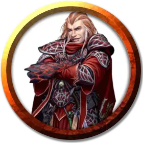

Гриша
Grisha
Средний Гуманоид (Человек дамаранец), хаотично-злой, именной НИП

Класс Доспеха 18 (кольчуга, щит)
Хиты 33 (6к8 + 6)
Скорость 30 футов
| мод | спас | ||
|---|---|---|---|
| СИЛ | 14 | +2 | +2 |
| ЛОВ | 12 | +1 | +1 |
| ТЕЛ | 12 | +1 | +1 |
| мод | спас | ||
|---|---|---|---|
| ИНТ | 11 | +0 | +0 |
| МДР | 14 | +2 | +4 |
| ХАР | 16 | +3 | +5 |
Навыки Религия +2, Убеждение +5
Языки Общий, Подземный
Опасность 2 (450 опыта)
Бонус мастерства +2
Особенности
Использование заклинаний. Гриша – заклинатель 6-го уровня. Его базовой характеристикой является Мудрость (Сл спасброска от заклинаний 12, +4 к попаданию заклинатель- ными атаками). У него заготовлены следующие заклинания жреца:
• Заговоры (неограниченно): указание [guidance], свет [light], священное пламя [sacred flame], чудотворство [thaumaturgy];
• 1 уровень (4 ячейки): лечение ран [cure wounds], божественное благоволение [divine favor], нанесение ран [inflict wounds], защита от зла и добра [protection from evil and good], щит веры [shield of faith];
• 2 уровень (3 ячейки): вечный огонь [continual flame], удержание личности [hold person], магическое оружие [magic weapon], божественное оружие [spiritual weapon];
• 3 уровень (3 ячейки): проклятие [bestow curse], рассеивание магии [dispel magic], духовные стражи [spirit guardians].
Действия
Мультиатака. Гриша совершает две атаки своим цепом +1.
Цеп +1. Рукопашная атака оружием: +5 к попаданию, досягаемость 5 фт., одна цель. Попадание: Дробящий урон 7 (1к8 + 3).